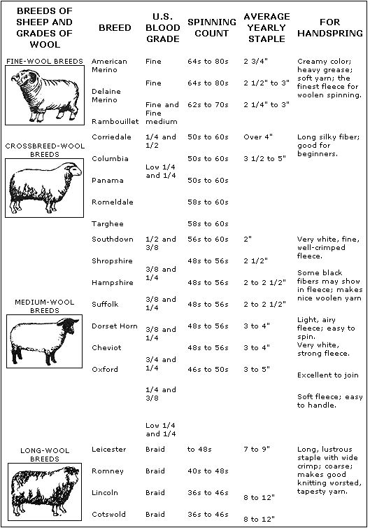
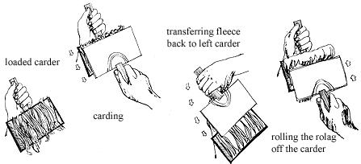
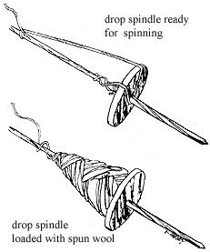
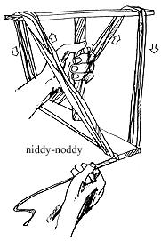

One of the things I like best of all-and which I'd like to share - is spinning wool and coloring it with natural dyes.
If you live in the country and can keep sheep, it's really fine to raise your own wool. Ask neighbors-especially teenagers in 4-H clubs-which breed of sheep produces what kind of wool, what you'll have to pay for the animals and how or where to get them started.
If you're not into having your own sheep or if you live in the city, drive out back country roads through relatively open land until you locate the owners of small flocks . . . who will often sell wool at reasonable prices. Here in Sonoma County, California-where we live-sheep ranchers and other farmers who keep the animals always seem to have many bags full of wool in their barns . . . just waiting to be turned into yarn by some industrious soul.
Sheep are usually sheared when the weather starts to warm in the spring. Each good fleece weighs about 10-15 pounds (a big bagful) and the cost of raw wool can vary widely. Here, on the borderline between outer suburbia and the sheep and dairy country, I buy fleece from small farmers for up to 50 cents a pound. My neighbor, Kathy-on the other hand-has gone direct to the larger sheep ranchers and purchased wool for the cost of shearing ($2.00 per sheep), or only about 20 cents a pound.
As you examine your first raw fleece, you'll discover that it consists of both long fibers and some short scrunchy stuff. The short scrunchy stuff is great for quilts but won't spin up well, so separate it from the long spinnable fibers.
Some people wash their wool at this point but I prefer to leave the natural grease (or lanolin, which sounds better) in the fleece. The oil helps the fibers cling together, which makes them a lot easier to spin. The lanolin also softens the skin and helps heal any cuts I might have on my hands.
If you do wash your raw wool, you should put some mineral or olive oil on the fleece before spinning it. Spray the clean fleece with a three-parts-mineral-oil-to-one-part-water emulsion or sprinkle it with undiluted olive oil. Then wrap the fleece in an old woolen cloth and let it set for a day or two while the oil soaks in.
Now for the teasing, or pulling the fleece gently apart until it's worked into a great cloud-like mass of fluffed-up fibers. This is a great job for winter nights with everyone sitting around the fire cleaning and fluffing . . . getting rid of sticks and burrs and drawing friends closer together.
Next you'll need some super wool combs called carders. A pair costs $5.00 to $8.00. There's also a very heavy horse brush with metal teeth which looks just like a carder, costs a lot less and works just as well. In fact, these brushes are being sold as carders in some wool shops.
You can even make use of Mother Nature's homegrown wool combs called teasles, or card teasles. These members of the sunflower family grow wild all over the country, are free for the getting and were used by the Indians for this very job. Pick the four-foot-long light green stickery parts that stand up (they'll turn brown as they dry) and tie several together to make good-feeling cards that work pretty well.
Mark your cards "left" and "right", always use them that way and-as they wear in-they'll develop an increasingly "easy" feel.
To card, spread a thin layer of wool evenly over the upturned teeth of the left card as you hold it in front of you with the handle pointing away from your body. Then brush the fleece gently toward you with the teeth of the right card until the fibers of the wool are nice and straight. During the process, some of the wool will stick to the right-hand comb and you'll have to transfer it back to the left one by reversing the right card (turning it so that its handle also points away from you) and sweeping the comb down across the left one. Repeat the whole combing process several times or until the wool feels, like you want your own hair to feel after a good brushing.
To remove the wool from the cards after the brushing's done, hold the combs in carding position (left handle away from you and right handle pointing toward your body). Then, starting at the bottom of the left card and pushing up and away toward its top, use the right card to roll the fibers into a thin roll called a rolag. The rolag, when picked up for removal, should be no fatter than two fingers for easiest spinning and-once you've stockpiled a number of rolags-you'll be ready for that step.
Spinning wheels are nice and, after four years of working wool, I finally have one of my own. I can now really appreciate the effort that mine saves me but-for starting out-I recommend a hand spindle. Hand spindles are simple to make, highly portable and give you a very basic understanding of your work.
I've used both the drop and the Navaho spindle and I prefer the latter for its efficiency. It also feels good and is easy to use while talking with friends. I don't know where you can buy one but you can make your own quite readily. Just be sure the spindle's not too heavy or too light and that the whorl is perfectly round.
Begin spinning with your Navaho, or thigh, spindle by tying a starter piece of spun wool to the dowel down next to the whorl. Pass the length of starter under the whorl and then wrap it in a spiral up the dowel to within an inch of the tip, where it is allowed to dangle free. Sit down comfortably (half-lotus position is good) and place the top part of the spindle on your right thigh if you're right-handed and on your left thigh if you're a southpaw. The spindle's bottom end should rest on a rug or dirt floor-some surface with traction-or in a cup, bowl or hole in the ground.
Join a rolag to the starter yarn by twisting the two together (about 1/3 the length of the rolag should be meshed with 1/3 the length of the starter). Then lean the spindle across your thigh, cradle the dowel in the vee between the thumb and first finger of your right hand (these instructions assume that you're righthanded) and roll the spindle up your thigh by stroking your hand backwards as you "string out" the rolag with your left hand.
Try to get a rhythm going. The left hand holds the yarn at an angle to the spindle and slowly draws the wool out of the rolag while the right hand rolls the spindle along your thigh. The fibers will be twisted together at the end of the dowel and transformed from crude rolag into lovely yarn. Keep the thumb and forefinger of the left hand closed on the developing yarn until it has twisted together tightly enough, then pause and move the left hand back to pull more wool from the rolag.
When the length of newly spun wool is nearly as long as you can comfortably reach with your left arm, release the yarn from beneath the whorl and-starting just above the whorl-wind the spun wool around the dowel. Leave enough loose yarn to start the process again, passing the excess or "starter" under the whorl and back to the top of the spindle as before. Continue spinning until you have a fat cone of yarn wound evenly around the dowel above the whorl.
It's now time to take the new yarn off the spindle and wind it around the arms of a friend to make a skein. If everyone's out tending the garden or heavy into guitar pickin', wind your skeins on a niddy-noddy. The niddy-noddy, or wooden arms, is a hand reel made from two sticks of wood joined at right angles to each other by a dowel which serves as a handle. Tie each finished skein in several places so it doesn't get tangled.
If you're going to use your your yarn for warp or macrame, or in anything that requires extra strength, you'll probably need to ply it-or twist two or more strands together-to keep the threads from breaking. To do this, put the balls of yarn in separate baskets, tie their ends to the spindle next to the whorl and pro ceed just as you did when you were first spinning. This will give you very strong yarn . . . if you remember to twist the threads together in the opposite direction from the original work (lest the wool unravel!).
If you want to color the yarn, there's a myriad of natural dyes you can grow or gather. Collecting bark, leaves, lichen and wild blossoms is a heavy trip for me and I'm always careful to leave lots of what I'm taking. The best book with the best price that I've found to guide me in selecting, making and using nature's colorings is DYE PLANTS AND DYEING: A HANDBOOK (No. 46, Brooklyn Botanical Garden, 1000 Washington Ave., Brooklyn, N.Y. 11225). I do a lot of experimenting now but when I started out I found it neat to follow the recipes in this guide. They really work! The book is excellent, loved by friends around the country who dye wool . . . and I'd only be duplicating energy to repeat the information it contains.
Mordanting is a chemical process which enables colors to stick to wool, rather than wash out and fade and-most of the time-you'll need to use mordant with your dyes. Of the mordants listed in DYE PLANTS AND DYEING, the ones I've found to be best, cheapest and easiest to obtain are alum and cream of tartar.
Stay loose when dyeing. It doesn't seem to be necessary to follow instructions to the letter, and experimenting is fun and profitable. I've found that soaking the plants for three or four days will bring out their deeper colors . . . and occasionally, when batch of dye has fermented-like the pan of onion skins I forgot for a few weeks-it has produced a whole new range of colors (and some incredible smells as well!).
Most dye plants (except for onion skins, walnut hulls, oak galls and lichens, which can be kept and dried) lose a lot of their potency when stored for long periods of time so it's best to pick, card and spin wool in the winter when the plants are not doing their trip. Amass lots of skeins of yarn (which can be mordanted way before dyeing). Come spring when the plants are out in profusion, you'll be ready to get it on with the coloring.
One last thing: I've found it invaluable to keep records of my dyeing. I document what was picked, when and where, how long it was soaked and simmered, what mordant was used . . . anything important to the process . . . and keep a sample of the plant with a piece of the colored wool. This record is handy for showing others or when making a special pattern for which you wish to duplicate exact colors.
R.W. LANG
The Navaho spindle or spindle whorl (also known to Nelolithic Europeans and most other primitive weavers) is a simple alternative to the costly spinning wheel. It consists of a two-foot-long straight tree branch, scraped smooth and tapered from a 1/2-inch diameter butt at one end to a 1/4-inch diameter rounded point at the other. A wooden disk, 3-1/2 inches in diameter, flat on one side and convex on the other, is drilled through the center and slipped down the rod from the pointed end until it fits snugly about one quarter of the way up from the butt . . . with its flat side facing the point. This disk is the whorl.
The wool is spun into yarn on the long section of the rod above the disk, while the butt serves as a handle or rest.
If no pre-spun yarn is available for a starter length, pull and twist some wool into a soft, fairly heavy card and attach it to the spindle just above the whorl. Twine this card around the rod and let it hang loose from the pointed end. Now add more wool by twisting one end of a new piece to the free end of the card already on the spindle, and pulling the new wool out with one hand while turning the spindle with the other to twist the fibers into yarn. Continue in this fashion, stopping occasionally to pile the finished yarn into a cone against the disk, until the spindle is full.
Navahos prefer the spindle to the spinning wheel because the spindle both holds more yarn and allows the weaver more mobility while working. Learning the art of spinning is no mean feat-Navaho weavers are judged as much by the proficiency of their spinning as by the quality of their finished products-but with patience it can be done.
R.W. LANG
According to NAVAHO NATIVE DYES (Bryan and Young, 1940), both orange-tan and yellow-tan dye, as well as a fine mordant, can be made from the evergreen juniper tree.
To dye 1 lb. of yarn orange-tan, boil 2 lbs. of bast, twigs and-if you like-berries in 4 gals. of water for one hour. Strain the mixture, add 1/4 cup raw alum and boil again while stirring well. Wet the yarn, add it to the dye and stir. Boil the wool one hour for a light shade and two hours for a darker one . . . then let the yarn stand overnight in the dye water. Follow with a good rinsing.
You can prepare yellow-tan dye from the evergreen junipers in the same way by omitting the alum and using no mordants.
To make a mordant of juniper gather the dryer branches, burn them over a wide container and catch the needle ashes (be careful to get ONLY needle ash). Collect 1 cup of these ashes, add 2 cups of boiling water, stir thoroughly and strain. The liquid is the mordant.
I haven't tried these recipes myself, but I've seen the end product in Navaho textiles and the colors are quite pleasing. Although the formulas refer to the one-seed juniper of the Southwest, the junipers found in Indiana might work just as well.
|
 |
 |
 |
|
 |
|
|